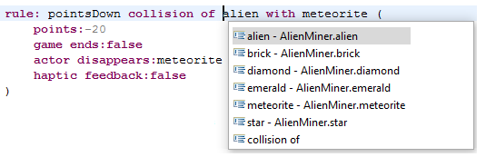

Welcome to PhyDSL.
PhyDSL is a game engine and game authoring environment for mobile 2D physics-based games. PhyDSL consists of a textual domain-specific language for gameplay design, and a generation engine capable of taking high-level gameplay specifications and translating them into executable code for Android devices. PhyDSL has been developed by Victor Guana in the University of Alberta at the Service Systems Research Group, and it is a successful case study on building complex software systems using model-driven engineering technologies.
The most recent release of PhyDSL includes complex camera behaviors, flexible on screen controls, and optimized memory management for large game worlds.
PhyDSL Technologies
PhyDSL is built on top of the Box2D physics engine with a flexible Java/Android architecture. PhyDSL is comprised by two main components: a self-contained code generator built-in ATL and Acceleo model-transformation technolgoies, and an Eclipse plug-in that enables developers to specify game play designs using a textual syntax delectated editor built using XText.
PhyDSL Vision
Game engines enable developers to reuse assets from previously developed games, thus easing the software-engineering challenges around the video-game development experience and making the implementation of games less expensive, less technologically brittle, and more efficient.
The construction of game engines is challenging in itself; it involves the specification of well defined architectures and typical gameplay behaviors, flexible enough to enable game designers to implement their vision, while, at the same time, simplifying the implementation through asset and code reuse. PhyDSL involves the active use of modern model-driven engineering technologies to overcome the complexity of game engine design and to systematize its maintenance and evolution.

More often than not game developers have to translate their gameplay designs into the operational semantics of a general programming language, such as Java or C. This task is cognitively challenging and often frustrating for developers. Indeed, general programming languages are not designed to capture the developers’ vision of a game.
PhyDSL provides a high-level domain-specific language that can be used to capture gameplay specifications, and it is aligned with the semantics of gameplay modeling. PhyDSL enables developers to quickly prototype gameplay designs in order to gain timely insights about their "look and feel" and general gameplay mechanics.
The Faces Behind PhyDSL
Victor Guana Ph.D. Candidate and Project Lead, Vina Nguyen Intern, Eleni Stroulia Supervisor.
 Key Publications
Key Publications
- Guana, V., Stroulia, E. PhyDSL: A Code-generation Environment for 2D Physics-based Games. IEEE Games, Entertainment, and Media Conference (IEEE GEM'14). October 22 - 24, 2014, Toronto. ON. Canada.
- Guana, V., Stroulia, E., Nguyen, V. Building a Game Engine: A Tale of Modern Model-Driven Engineering. 4th International Workshop on Games and Software Engineering (GAS15). May 18, 2015. Florence, Italy
- Tong, T., Guana, V., Jovanovic, A., Tran, F., Mozafari, G., Chingell, M., and Stroulia, E. Rapid Deployment and Evaluation of Mobile Serious Games: A Cognitive Assessment Case Study. 7th International Conference on Advances in Information Technology, Elsevier (IAIT15). Nov 22-25 2015. Thailand.